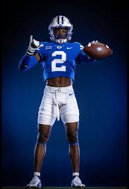
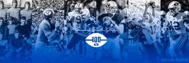
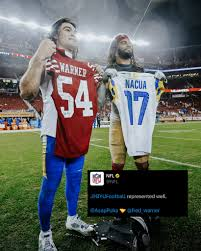

Why is BYU football better than Utah football?
Jump to List
Photo Gallery

Best Jerseys

Celebrating 100 Years

Cougs in the NFL
Top 10 Reasons Why BYU Football is Better
- BYU Fanbase is much larger, ranked #43 nationally compared to Utah's #67.
- BYU typically has higher average attendance than Utah.
- BYU's LaVell Edwards Stadium holds over 63,000 fans.
- Utah's stadium holds fewer than 50,000 fans.
- BYU won the national championship in 1984; Utah has none.
- Taysom Hill can squat more than anybody from Utah.
- Fred Warner may go down as the best linebacker of all time.
- Puka Nakua is better than any Utah wide receiver in the NFL right now.
- BYU fans did not dump beer on opposing team parents like Utah fans.
- Utah AD Mark Harlan deserved more than a 40K fine.
- Steve Young is better than any player Utah has ever produced.
- Jimmer Time